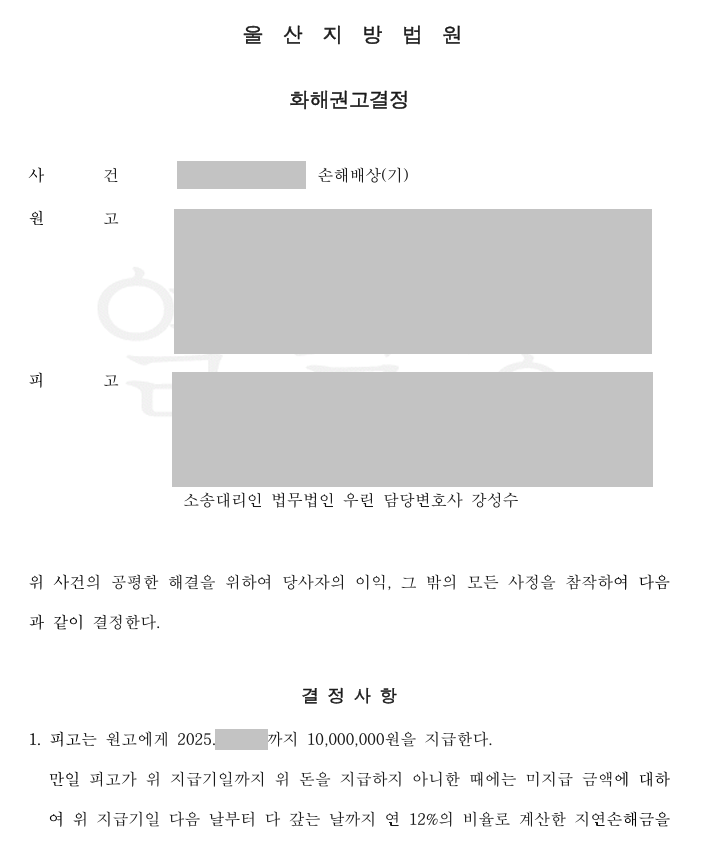

핵심 결과
상간자 손해배상 소송에서 상대 배우자가 임신 중이었다면 매우 불리하게 평가될 수 있습니다.
법원은 임신 중 부정행위가 남은 가정에 주는 정신적 충격을 크게 봅니다.
이번 사건은 애정표현 문자까지 남아 있었습니다.
원고는 위자료 4,000만 원을 청구했습니다.
하지만 법무법인 우린은 혼인관계의 실제 상태, 부정행위의 경위, 문자 증거의 맥락, 감액 사유를 정리했습니다.
그 결과 1,000만 원 화해권고로 사건을 마무리했습니다.
| 구분 | 내용 |
|---|---|
| 사건 분야 | 상간자 손해배상 소송 |
| 원고 청구 | 위자료 4,000만 원 |
| 불리한 요소 | 원고 배우자의 임신, 애정표현 문자 증거 |
| 주요 쟁점 | 위자료 액수, 혼인관계 상태, 부정행위 경위 |
| 주요 대응 | 감액 사유 정리, 증거 맥락 분석, 현실적 화해권고 유도 |
| 최종 결과 | 1,000만 원 화해권고 |
사건 개요
의뢰인은 상간자 손해배상 소송의 피고로 상담을 요청했습니다.
원고는 위자료 4,000만 원을 청구했습니다.
사건의 조건은 매우 불리했습니다.
원고 배우자가 임신 중이었고, 의뢰인과 상대방 사이의 애정표현 문자도 남아 있었습니다.
상간자 소송에서 이런 증거는 위자료를 높이는 요소가 될 수 있습니다.
위자료가 높아질 수 있었던 이유
- 원고 배우자가 임신 중이었습니다.
- 부정행위를 의심할 수 있는 애정표현 문자가 있었습니다.
- 원고가 강한 감정적 피해를 주장했습니다.
- 청구금액이 4,000만 원으로 높았습니다.
- 법원이 임신 중 부정행위를 엄격하게 볼 수 있는 사건이었습니다.
이런 사건은 단순한 사과나 감정 호소만으로 감액되기 어렵습니다.
상간자 소송에서 위자료가 정해지는 기준
상간자 소송은 감정 싸움처럼 보이지만 실제로는 자료 싸움입니다.
법원은 여러 사정을 종합해서 위자료 액수를 정합니다.
| 판단 요소 | 의미 |
|---|---|
| 혼인 기간 | 부부 관계가 얼마나 유지되었는지 |
| 혼인 파탄 정도 | 부정행위 전 이미 갈등이 있었는지 |
| 부정행위 기간 | 만남이 얼마나 지속되었는지 |
| 증거 내용 | 문자, 사진, 통화 기록의 구체성 |
| 원고 피해 | 정신적 충격과 가정생활에 미친 영향 |
따라서 애정표현 문자가 있다고 해서 무조건 청구금액 전부가 인정되는 것은 아닙니다.
핵심은 증거의 전체 맥락과 감액 사유를 어떻게 정리하느냐입니다.
해결 전략
1. 불리한 증거를 숨기지 않고 맥락을 정리했습니다
애정표현 문자가 존재하는 이상 이를 단순히 부정하기는 어려웠습니다.
대신 그 문자가 어떤 관계와 상황에서 나온 것인지, 실제 부정행위의 범위와 기간은 어느 정도인지 구체적으로 정리했습니다.
불리한 증거를 무시하지 않고, 재판부가 볼 수 있는 맥락 안에 배치했습니다.
2. 위자료 감액 사유를 구조화했습니다
상간자 소송에서 위자료는 여러 요소로 결정됩니다.
원고 부부의 기존 혼인관계, 사건 전후의 갈등, 의뢰인이 알 수 있었던 사정, 부정행위의 정도를 나누어 검토했습니다.
그 결과 청구금액 4,000만 원이 과도하다는 점을 설명할 수 있었습니다.
3. 현실적인 화해권고 방향으로 유도했습니다
상간자 소송은 장기화될수록 감정과 비용 부담이 커집니다.
무조건 끝까지 다투기보다, 의뢰인에게 현실적으로 가장 안전한 마무리 방법을 선택해야 했습니다.
재판부가 받아들일 수 있는 감액 사유를 정리해 1,000만 원 수준의 화해권고가 나오도록 대응했습니다.
| 대응 항목 | 준비한 내용 |
|---|---|
| 증거 분석 | 애정표현 문자와 관계 경위의 맥락 정리 |
| 혼인관계 검토 | 원고 부부의 기존 갈등과 혼인 상태 확인 |
| 감액 사유 | 부정행위 범위, 기간, 인식 정도 구분 |
| 서면 전략 | 청구금액이 과도하다는 점을 법리적으로 설명 |
| 결과 목표 | 고액 판결 위험을 줄이고 현실적 금액으로 종결 |
결과
원고는 4,000만 원을 청구했습니다.
하지만 재판부는 저희 측이 정리한 감액 사유를 검토했습니다.
최종적으로 1,000만 원 화해권고 결정이 내려졌습니다.
최종 결과
임신 중 부정행위와 애정표현 문자라는 불리한 조건이 있었지만, 원고의 4,000만 원 청구를 1,000만 원 화해권고로 방어했습니다.
의뢰인은 청구액의 4분의 1 수준으로 사건을 마무리할 수 있었습니다.
상간자 소송에서 조심해야 할 점
소장을 받으면 당황해서 상대방에게 직접 연락하는 경우가 있습니다.
하지만 감정적인 연락은 오히려 불리한 증거가 될 수 있습니다.
또 문자 증거가 있다고 해서 바로 포기할 필요도 없습니다.
중요한 것은 어떤 증거가 있고, 그 증거가 실제로 어느 정도 위자료에 영향을 주는지 분석하는 것입니다.
청구금액이 높다고 해서 그대로 인정되는 것은 아닙니다.
결론
임신 중 부정행위가 문제 된 상간자 소송은 위자료가 높아질 수 있는 사건입니다.
하지만 모든 사건에서 청구금액 전부가 인정되는 것은 아닙니다.
증거의 맥락, 혼인관계의 실제 상태, 부정행위 기간과 정도, 감액 사유를 정리하면 결과는 달라질 수 있습니다.
사무장·상담실장 없이 변호사가 직접 상담합니다
상간자 소송은 초기 답변서와 증거 정리가 중요합니다.
법무법인 우린은 강성수 변호사가 직접 상담하고, 소장 검토부터 감액 사유 정리, 재판 대응까지 직접 진행합니다.
고액 위자료 청구를 받았다면 먼저 소장과 증거자료를 정확히 확인해야 합니다.
이 글은 일반적인 법률 정보 제공을 위한 자료이며, 개별 사건의 결과를 보장하지 않습니다. 구체적인 대응은 사실관계와 증거에 따라 달라질 수 있습니다.